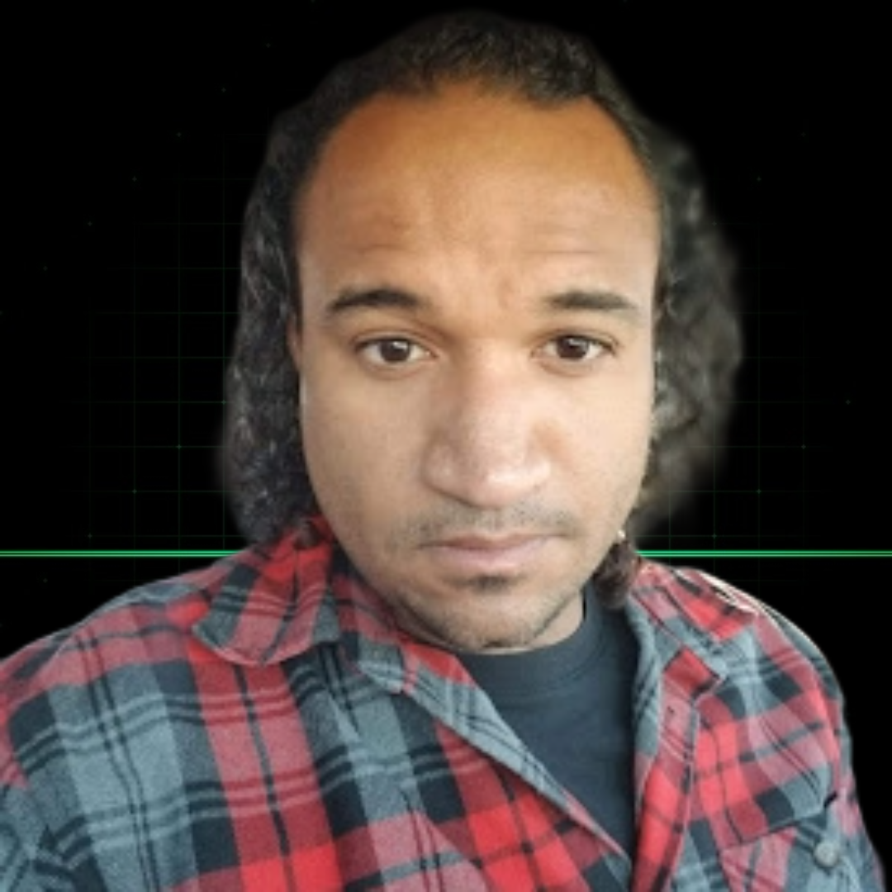

I build what others scope out. 14 years across infrastructure, cloud, automation, and software — now focused on building AI-native products and systems that generate real business outcomes.

I don't just write code. I architect systems, make the right tool decisions, ship the MVP, and build in a way that doesn't fall apart when things get real.
Intelligent phone systems built on GoHighLevel that handle inbound calls, qualify leads, and route conversations — trained for your business, running 24/7.
End-to-end workflow automation with n8n: lead ingestion, data routing, internal ops, client-facing systems. The repetitive work gets handled so your team can focus on what moves the business.
From validated idea to multi-tenant product — architecture, back-end, front-end, auth, billing, deployment. Built to scale, designed to sell.
High-performance sites and local SEO infrastructure built to rank, convert, and capture demand. Engineered, not templated.
Most technical people either write good code or think about the business. Rarely both. That gap is where most startups slow down or stall entirely.
I've spent 14 years building systems that have to work — critical infrastructure, high-availability environments, production systems where downtime costs real money. That background doesn't just make me a better engineer. It makes me a better product decision-maker. I know what breaks at scale, when to build custom, when to buy, and how to scope an MVP that's real enough to validate and tight enough to ship fast.
No manufactured case studies. These are actual builds — each one designed to solve a specific business problem.
Built a GoHighLevel voice agent trained on job types, service areas, and booking logic. Handles inbound calls end-to-end — qualifies the lead, books the estimate, and gives the team a warm handoff instead of a voicemail.
Built a multi-source lead ingestion system that scores, deduplicates, and routes leads by priority — automatically. The team went from spending hours on data entry to focusing entirely on conversations that matter.
Automated the full intake flow for a boutique law firm — form submission to CRM to conflict check to attorney briefing, end-to-end. Every manual handoff eliminated. The team gets time back every single week.
Ideas taken from concept to working product. Some are SaaS. Some are AI pipelines. Some are business tools. All of them started as a problem worth solving.
Turns a child's drawing into an animated video — no artistic skill required.
AI content engine that generates platform-native posts — videos, images, memes — built for volume and virality.
Full-stack revenue systems for local service businesses — site, AI answering, automated follow-up, and conversion optimization as one integrated product.
Multi-agent pipeline that identifies targets, scrapes context, and sends personalized outbound at scale.
Voice-analysis system that reads nervous system state and delivers a personalized reset protocol.
AI scanning system that monitors ETFs and surfaces optimal dividend capture windows automatically.
Rapid-deploy conversion funnels built for roofing companies to capture and close storm leads before the window closes.
If you're still deciding whether you want to build something, this isn't the right moment. If you know what you want and need someone who can actually execute it — read on.
Regardless of the structure, you get someone who's fully engaged — not a resource on rotation.
I'm selective about what I take on — which means if we're talking, I'm already interested. Tell me what you're building, where you are, and what you need. We'll figure out the rest.
darrell@darrellgreenfield.devBest fit: pre-seed to Series A · Operators with urgency · Founders who want a builder at the table